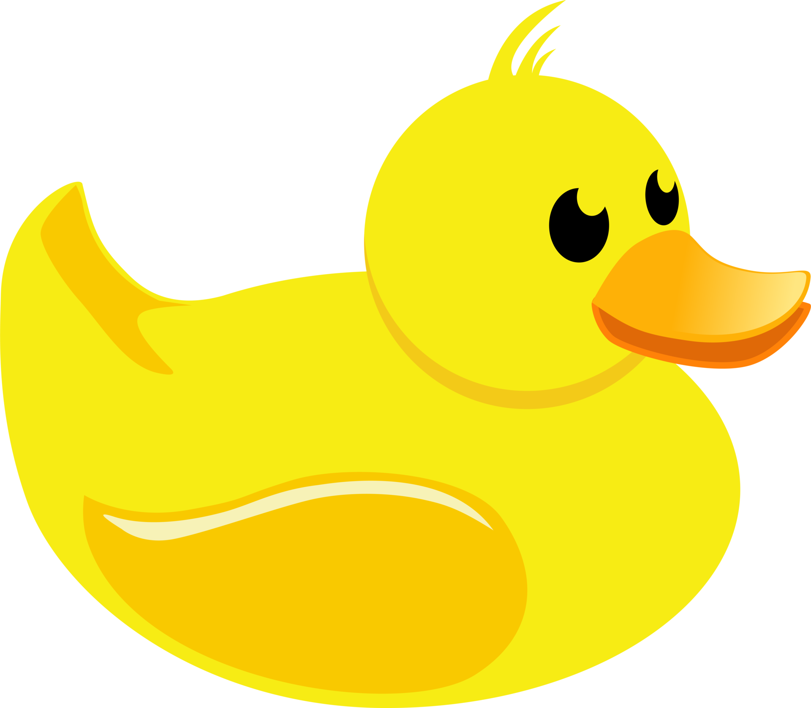
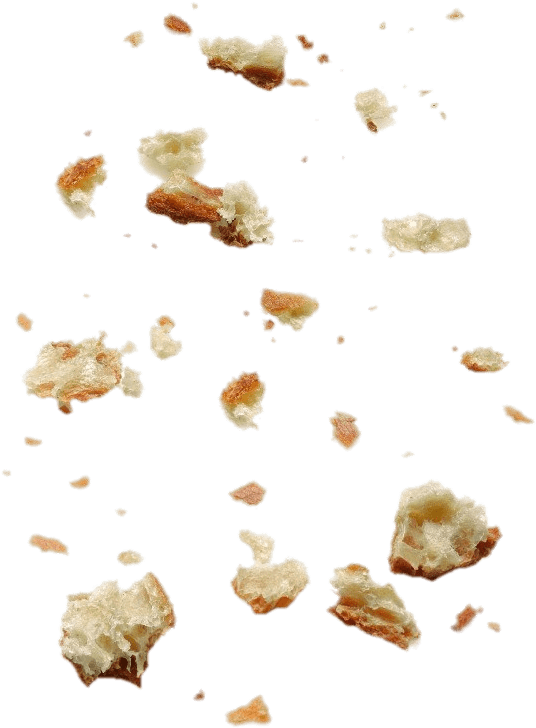
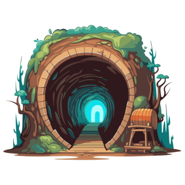
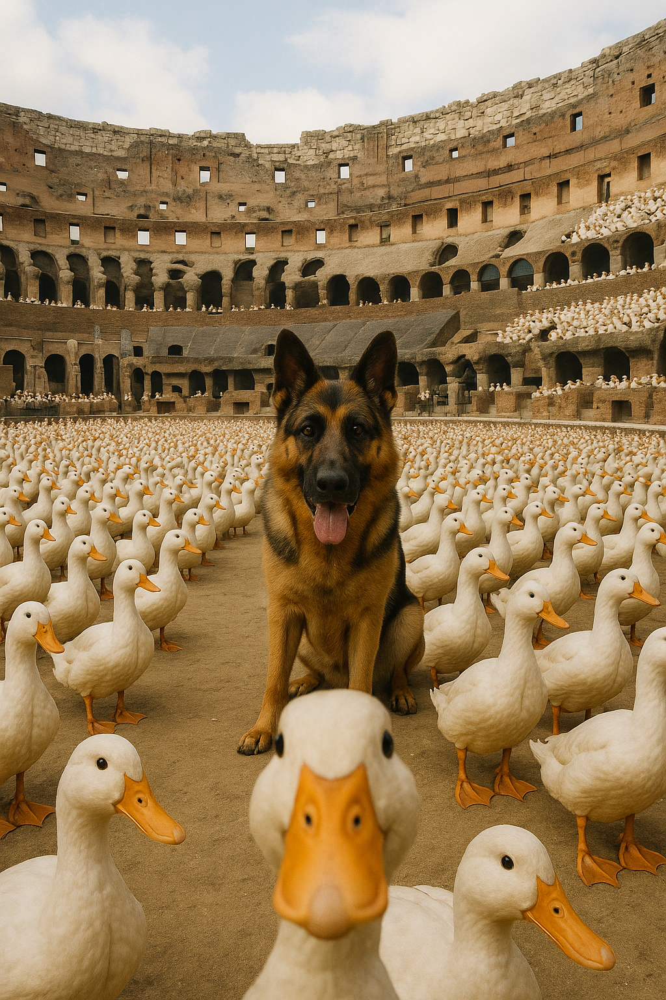
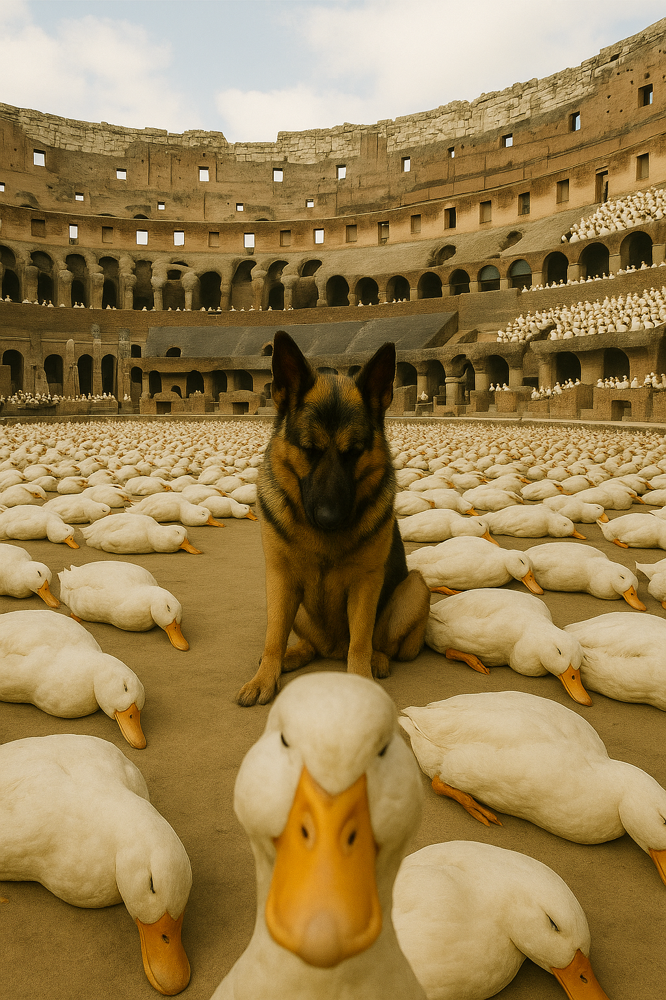
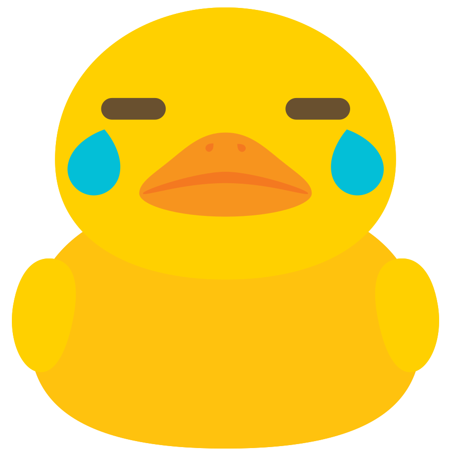
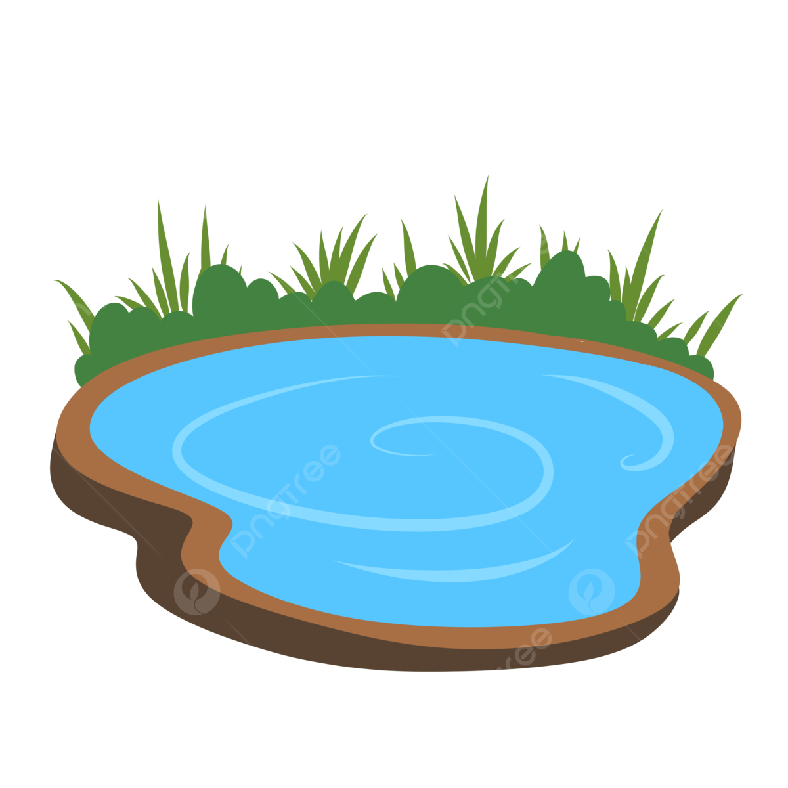
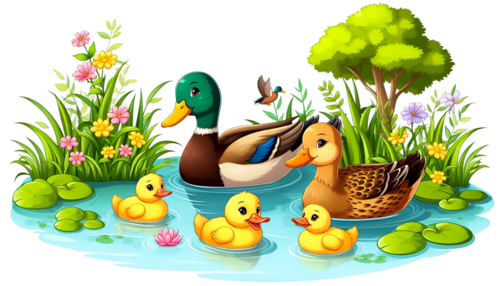
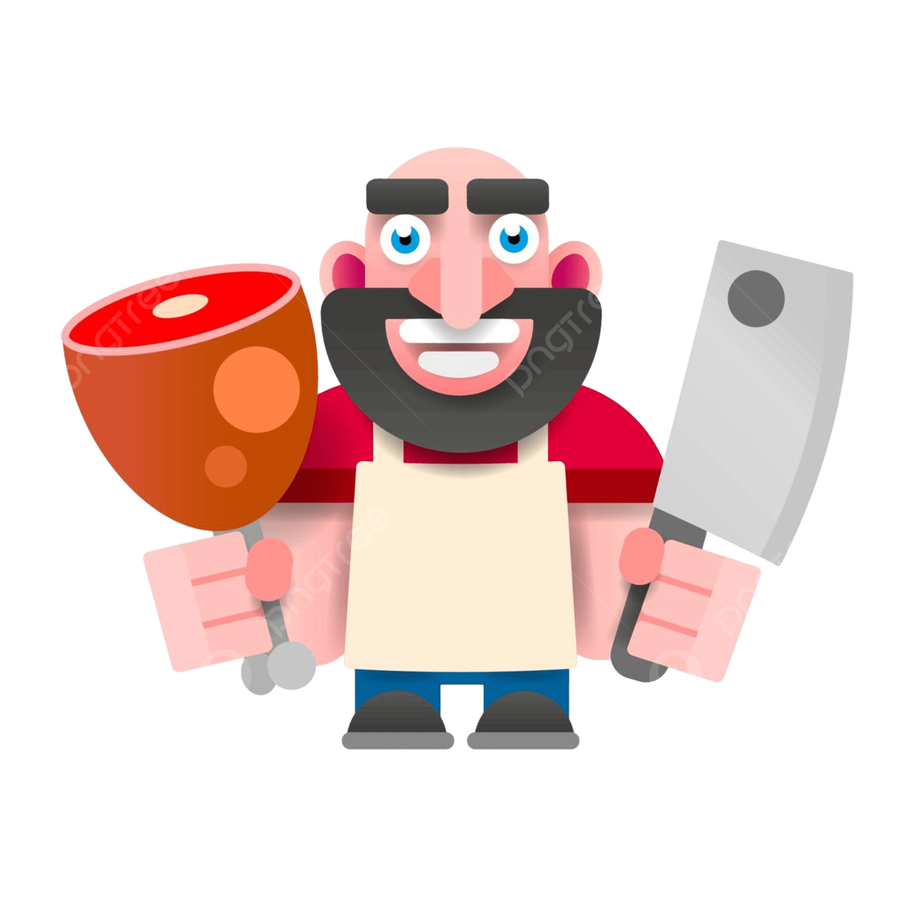

Wow! BenedictusMaximus the Duck ran away from his family pond after an argument! We need to help him find his way back, or maybe you have something different planned for BenedictusMaximus. . ?


What the. . . It must be BenedictusMaximus's lucky day! Breads crumbs? Who cares about family when there's breadcrumbs!
You decide to be a manly duck and lock in, suppressing all other distractions.
(You are now locked in, you can only go backwards)
You go backwards, trying to retrace your steps. . . You find yourself greeted to the plains.
You remember going through the plains when going to the pond, but can't seem to remember which way to go.

You take a right for . . . whatever reason. .
You hear something behind you and. . .
The world is getting sucked into another portal behind you,
How'd that get there?? As the world is seeminlgy being crushed behind you,
you look into the cave and see another portal. Choose what you want to do below.
.

Wow uh. I think BenedictusMaximus is doomed.
He's heard legends of this happening but . . now he's up close with. . HIM.
Bryandaleontris, the gladiator. And along side him. .
A Group of EVIL DUCKS? ? ? I think BenedictusMaximus is doomed. .
(DOOMED ENDING)

You forgot BenedictusMaximus is THE BenedictusMaximus.
He'd use his laser eyes, knowing everyone out.
Heh. In the situation of a 60 on 1, always bet on BenedictusMaximus.

So. . . why would you wait there??
Did you think it was all gonna' stop and solve itself.
This is on you. YOU killed BenedictusMaximus.
(DOOMED ENDING TWO)
.

You see a seemingly empty pond infront of you. . .
You believe it's empty, but what's the harm in checking right?

Y-you're family. . they're here, waiting for you!
What's that. . . they say they forgive you? Hurray!
Now you can be reuinted with your family!
(GOOD ENDING)

. . . BenedictusMaximus would continue to follow the Bread Crumbs into Philorenzatius's butcher house. . .
He'd stare directly at BenedictusMaximus,
as they both knew, someone would be feasting, and one would know their end.
(BAD END)